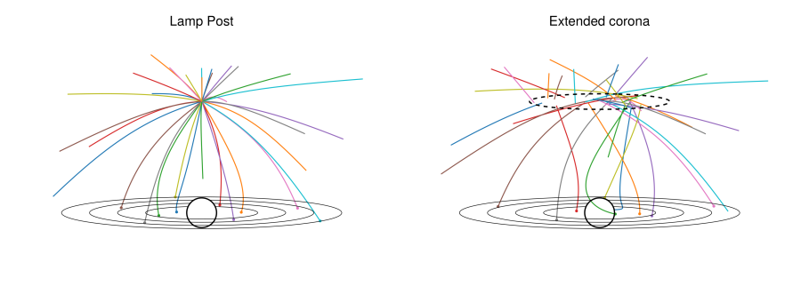

Disc emissivity
The emissivity of an accretion disc is the intensity of radiation coming from a given patch of the disc. In addition to the inherent thermal flux in the disc, GRRTs can be used to estimate reflected flux from a coronal source.
Gradus.source_to_disc_emissivity — Functionsource_to_disc_emissivity(
m::AbstractStaticAxisSymmetric,
spec::AbstractCoronalSpectrum,
N,
A,
x,
g,
v_disc,
)Compute the emissivity of a disc element with (proper) area A at coordinates x with metric m and coronal spectrum spec. Since the emissivity is dependent on the incident flux, the photon (geodesic) count N must be specified, along with the ratio of energies g (computed with energy_ratio) and the spectrum spec.
The mathematical definition is
\[\varepsilon = \frac{N}{A g^\Gamma \gamma},\]
where $\gamma$ is the Lorentz factor due to the velocity of the local disc frame. The velocity is currently always considered to be the Keplerian velocity.
Wilkins & Fabian (2012) and Gonzalez et al. (2017).
These functions are not meant to be directly interacted with. Instead, Gradus abstracts these definitions into profile structs. These structs bin the emissivity in various ways – for example RadialDiscProfile.
Calculating emissivity profiles
Depending on the geometry of the corona, the symmetries of the spacetime, and the type of disc being traced, there are sometimes very efficient schemes for calculating the emissivity profiles.
As a motivating example, consider the lamp post geometry with 64 rays. These may either be traced by sampling directions on the local sky of the emitter:

Or, alternatively, we may exploit the radial symmetry of the system, and sample fewer points in the two dimensional $x$-$z$ plane:

For detailed descriptions of these methods, see Emissivity profile algorithms.
Both of these methods can be used to estimate the emissivity profiles with trivial changes to switch between them
Gradus.emissivity_profile — Functionfunction emissivity_profile(
m::AbstractMetric,
d::AbstractAccretionGeometry,
model::AbstractCoronaModel;
kwargs...,
endCalculate the reflection emissivity profile of an accretion disc d around the spacetime m for an illuminating coronal model model.
Returns a RadialDiscProfile via (Monte-Carlo or uniform) sampling of the AbstractCoronaModel position and velocity distribution.
This function will attempt to automatically switch to use a better scheme to calculate the emissivity profiles if one is available. If not, the default algorithm is to estimate photon count $N$ and calculate the emissivity with source_to_disc_emissivity.
Common keyword arguments:
n_samples: the maximum number of individual geodesics to sample on the emitter's sky.
Please consult the documentation of a specific model (e.g. LampPostModel) to see algorithm specific keywords that may be passed.
All other keyword arguments are forwarded to tracegeodesics.
Example
m = KerrMetric()
d = ThinDisc(Gradus.isco(m), 1000.0)
model = LampPostModel(h = 10.0)
profile = emissivity_profile(m, d, model; n_samples = 128)
# visualise as a function of disc radius
using Plots
plot(profile)Notes
The sampling is performed using an AbstractDirectionSampler, which samples angles on the emitters sky along which a geodesic is traced. The effects of the spacetime and the observer's velocity are taken into account by using tetradframe and the corresponding coordinate transformation for local to global coordinates.
This function assumes axis symmetry, and therefore always interpolates the emissivity as a function of the radial coordinate on the disc. If non-symmetric profiles are desired, consider using tracecorona with a profile constructor, e.g. VoronoiDiscProfile.
Using emissivity profiles
Adding coronal models
A coronal model must minimally specify how pairs of source position and velocity are to be sampled. For example, the lamp post model has only a single position (the point location), and is stationary. A stationary extended corona has different positions, but always the same velocity, and a moving extended source has both a position and velocity distribution which must be sampled to calculate the emissivity profile:

Coronal sources must subtype AbstractCoronaModel:
Gradus.AbstractCoronaModel — Typeabstract type AbstractCoronaModel{T}The supertype of coronal models, which concrete models must subtype. Struct implementing AbstractCoronaModel must implement minimally sample_position_velocity.
For example, adding the lamp-post coronal model
struct LampPostModel{T} <: AbstractCoronaModel{T}
height::T
end
function Gradus.sample_position_velocity(m::AbstractMetric, model::LampPostModel)
# avoid coordinate singularity with a small θ
x = SVector(0, model.height, 1e-3, 0)
# ensure velocity is normalized
g = metric_components(m, SVector(x[2], x[3]))
v = inv(√(-g[1])) * SVector(1, 0, 0, 0)
x, v
endNote that sample_position_velocity has a number of its own requirements (see that function's documentation). This function must be implemented as a fallback for other methods.
If special symmetries exist, these may be used in the implementations of higher-order functions, such as emissivity_profile.
Gradus.sample_position_velocity — Functionsample_position_velocity(m::AbstractMetric, model::AbstractCoronaModel)
sample_position_velocity(
m::AbstractMetric,
model::AbstractCoronaModel,
::AbstractDirectionSampler,
i,
N,
)Sample a source position and velocity pair from the AbstractCoronaModel, optionally specifying the sampler, the sample index i, and total number of samples N. The latter is used when uniform samples are needed, but will invoke the prior if not implemented.
Currently, these functions should make use of random if they have underlying position and/or velocity distributions, allowing higher order methods, such as tracecorona to approximate a Monte-Carlo sampling technique. The user is required to ensure that the distributions have the desired properties.
This function must return a pair of SVector{4,T}, where the type must match the parametric type of the coronal model, corresponding to the source position and velocity of that position.
The velocity vector must be appropriately normalised for the source (see propernorm for help).
Example
Here we implement a new AbstractCoronaModel that is extended over a region at constant height above the black hole. Since we desire the distribution of points to be even over this disc, we must sample as
\[\phi \sim 2\pi \mathcal{U}, \quad \text{and} \quad r \sim \sqrt{R^2 \mathcal{U}},\]
where $\mathcal{U}$ is a uniform random variable in $[0, 1]$, and $R$ is the radial extent of the coronal source. Implemented, this is
struct ExtendedCorona{T} <: Gradus.AbstractCoronaModel{T}
h::T
R::T
end
function Gradus.sample_position_velocity(m::AbstractMetric, model::ExtendedCorona{T}) where {T}
ϕ = rand(T) * 2π
R = √(rand(T) * model.R^2)
# geometry to translate to global coordinates
r = √(model.h^2 + R^2)
θ = atan(R, model.h)
# ensure velocity is normalized
g = metric_components(m, SVector(r, θ))
v = inv(√(-g[1])) * SVector(1, 0, 0, 0)
SVector(0, r, θ, ϕ), v
endRadial disc profile
Missing docstring for RadialDiscProfile. Check Documenter's build log for details.
Voronoi disc profile
Missing docstring for VoronoiDiscProfile. Check Documenter's build log for details.
Emissivity profile algorithms
In this case, we must be careful to weight the emissivity accordingly:
Missing docstring for point_source_equitorial_disc_emissivity. Check Documenter's build log for details.